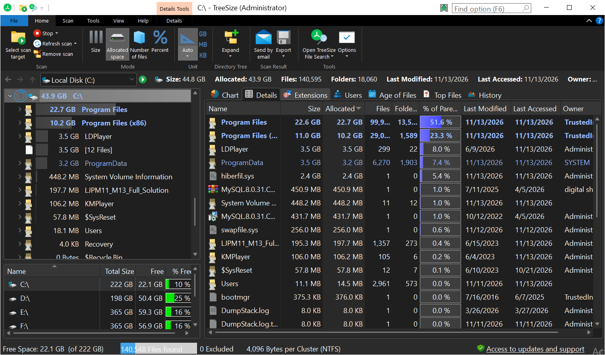
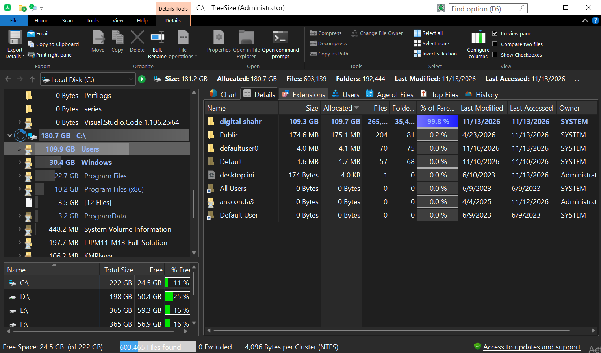
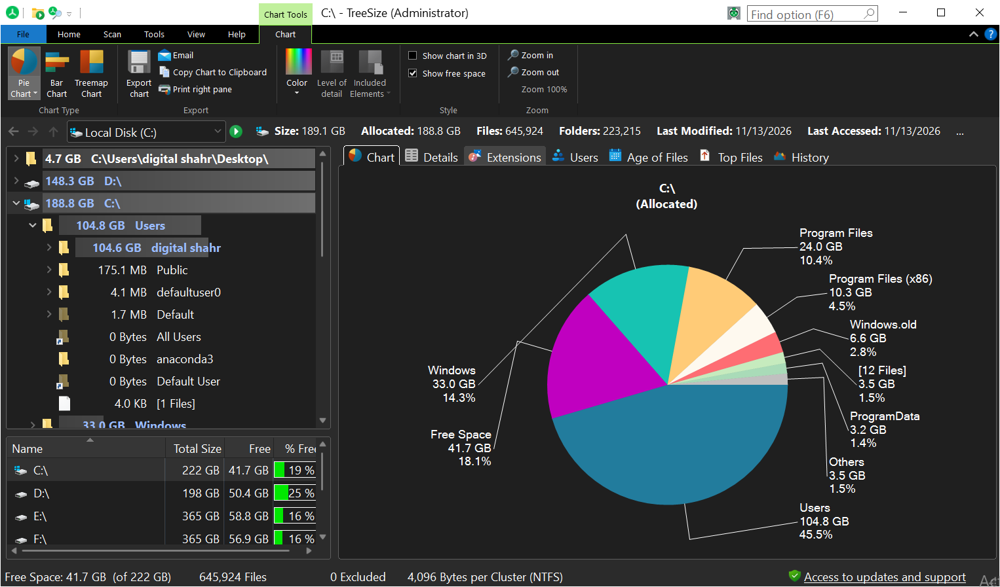

Storage Management
Storage Management — analyzing disk space with TreeSize and proposing ways to free up space.
01 / Mission goal
The goal of this project is to examine how disk space is used with TreeSize, identify the largest folders and files, and find unnecessary data. The practical goal of the project is to free at least 5 GB of space without harming the user's important files or system files. We also learn how to assess the importance and risk of each file before deleting it.
02 / Tools and runtime environment
TreeSize (Free edition): shows folder and file sizes as a tree, sorts by size, and shows the largest files and the distribution of file types.
Disk Cleanup / Storage Settings: built-in Windows tools for safely cleaning temporary files, the update cache and the Recycle Bin.
Runtime environment: Windows 10/11, with TreeSize run with Administrator access for a full scan of drive C: and the data drives.
03 / Execution steps
- Recording the initial state: before anything else, we note the free and used space of drive C: in This PC or Storage Settings and take a screenshot so that a before/after comparison is possible.
- Installing and running TreeSize: we install the program and run it with Run as administrator so that it can access all folders.
- Scanning the drive: we select and scan drive C:. In the tree view, we sort the Size column so the largest folders are at the top.
- Deeper inspection: we go into large folders such as Users, Downloads, AppData\Local\Temp and Windows\SoftwareDistribution, and use the Largest Files and File Types tabs to find large files and heavy types (such as ISO, ZIP, MP4).
- Risk categorization: we place each item in one of three categories: safe to delete (temporary files, caches, Recycle Bin), needs review (downloaded files, videos) and don't touch (system files and installed programs).
- Cleanup: we clear temporary files and caches with Disk Cleanup and Storage Settings, review and delete installers and unused files, and then empty the Recycle Bin. We remove unused programs from Apps & Features.
- Rescan and comparison: we run TreeSize again and compare the new free space with the initial state to confirm that the 5 GB goal was reached.
04 / Findings and technical analysis
| Source of used space | Space freed | Deletion risk level |
|---|---|---|
| Temporary files (Temp) | 1.5 GB | Low |
| Windows Update cache | 1.9 GB | Low (via Disk Cleanup) |
| Old installers in Downloads | 1.7 GB | Medium (needs review) |
| Recycle Bin | 12.5 GB | Low |
| Browser cache | 2 GB | Low |
| Unused videos and ISOs | 0.9 GB | Medium (needs review) |
| Total | 20.5 GB | 5 GB goal achieved |
- The largest amount of unnecessary space usually accumulates in the Downloads and Temp folders and in caches, not in the programs' core files.
- TreeSize's tree view shows that a small number of folders occupy a large part of the space; therefore, examining a few large folders is more effective than randomly deleting small files.
- The File Types tab shows that ISO, ZIP and video files usually take the largest share of user files.
- The Windows Update cache is cleaned using the built-in Windows tool, not by manually deleting a system folder, to reduce the risk of damaging the system.
- Deleted files do not free up space until the Recycle Bin is emptied, so this step is essential for calculating the final space.
05 / Problems and solutions
| Problem | Suggested solution |
|---|---|
| Incomplete scan or Access Denied shown for some folders | Run TreeSize with Administrator access |
| Fear of deleting an important or system file | Delete only items in the “safe” category, move them to the Recycle Bin first, and don't touch the Windows and Program Files folders |
| Temp files in use that cannot be deleted | Close programs, skip files in use or restart the system and repeat the cleanup |
| Free space did not change after deletion | Empty the Recycle Bin and rescan |
| Need for deleted large files in the future | Move important large files to a flash drive, external drive or cloud storage instead of deleting them permanently |
06 / Visual documentation




07 / Summary and lessons learned
In this project I learned that to manage storage, you first need to “see” where the space is being used and only then decide what to delete. With its tree view and size-based sorting, TreeSize makes this fast and accurate and shows that a few large folders account for the biggest share.
I also learned that deletion should be risk-based: temporary files and caches are safe, user files need review, and system files should not be deleted manually. Capturing the before and after state, keeping visual documentation and backing up important files are professional habits in IT support work that this project taught me.